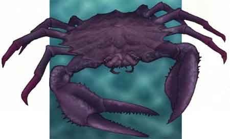

|
|
Ambiente/Habitat | Coste o Fondali Marini |
| Frequenza | Rare | |
| Organizzazione | Solitario | |
| Periodo di Attività | Any | |
| Dieta | Carnivore | |
| Intelligenza | Animal (1) | |
| Punti Combattimento | Nessuno | |
| Tesoro | Occasionale | |
| Allineamento Dominante | Neutrale | |
| Numero di Apparizione | 1 | |
| Classe Armatura | 2 [10 base, -8 corazza] | |
| Movimento | 6 esagoni / 6 swimming | |
| Dadi Vita | 5 | |
| Thac0 | 15 | |
| Numero di Attacchi | Chela / Chela | |
| Danni | 1d8+2 (taglio) / 1d8+2 (taglio) | |
| Poteri Offensivi | Istinto Predatorio; Mordere la Vittima Afferrata |
|
| Poteri Difensivi | Resistenza Superiore
all'Acqua; Resistenza Moderata al Freddo |
|
| Poteri Generici | Nessuno | |
| Vulnerabilità | Nessuna | |
| Resistenza alla Magia | Nessuna | |
| Sensi | Vista Comune, Sensi Superiori | |
| Dimensioni | Large (3,50 m. larghi) | |
| Morale | Elite (13) | |
| Valore in Punti Esperienza | 540 |
| MODIFICATORI AI TIRI SALVEZZA | |||||||||||||||||||||||
| COR | 0 | 45 | ENV | 0 | 50 | MAG | 0 | 59 | MAL | 0 | 44 | MEN | 0 | 57 | RIF | 0 | 53 | ROB | 0 | 47 | VEL | 0 | 41 |
Descrizione
Si tratta di un enorme granchio gigante la cui larghezza supera i tre metri. Sembra un normale granchio ad eccezione della sua taglia gigante. Unici particolari degni di nota sono rappresentati dalle sue grandi mandibole e dalle sue possenti chele seghettate ed acuminate.
Combat
Essendo sempre affamati i granchi giganti attaccano le loro prede in corpo a corpo lacerandone la pelle a brandelli e facendo fede sulla difesa costituita dal loro pesante carapace.
ISTINTO PREDATORIO (Moderate Special Ability): La creatura possiede un forte istinto predatorio, per tale motivo costei riceve un bonus costante di +1 ai suoi tiri per colpire.
MORDERE LA VITTIMA AFFERRATA (Moderate Special Ability): Questa creatura è in grado di utilizzare i propri attacchi di base per stringere l'avversario e morderlo con ferocia. Qualora, infatti, questa creatura colpisca con entrambi i suoi attacchi lo stesso avversario, la stessa potrà effettuare anche un attacco supplementare con il proprio morso contro la medesima vittima. In particolare, questo attacco simultaneo di morso effettuato contro il medesimo avversario riceverà un bonus di +2 al tiro per colpire e provocherà 2d4+2 danni da taglio.
RESISTENZA SUPERIORE ALL'ACQUA (Typical Ability): Il corpo della creatura è particolarmente resistente ai danni, sia magici che naturali, prodotti tramite l'acqua (indipendente dalla tipologia di danno prodotto), per tale motivo la stessa riduce del 50% (per eccesso) tutti i danni prodotti utilizzando l'acqua o altri liquidi (come ad esempio l'acido). Inoltre la creatura riceverà un bonus di +2 a tutti i tiri salvezza contro effetti prodotti utilizzando acqua od altri tipi di liquidi.
RESISTENZA MODERATA AL FREDDO (Typical Ability): Il corpo della creatura è particolarmente resistente ai danni da freddo per tale motivo costei riduce del 33% per eccesso tutti i danni da freddo subiti siano sia di natura magica che normale.
Habitat/Society
I granchi giganti sono creature solitarie che si aggirano sulle coste marine o sui bassi fondali in cerca di prede da divorare. Sono esseri territoriali ma il loro territorio è tanto vasto che non è facile definirne i confini. I granchi giganti possono respirare ed operare efficacemente sia sulla terra che sotto l'acqua. A volte, quando desiderano aspettare o riposarsi, si nascondono sotto la sabbia per uscire al calare del sole.
Ecology
I granchi giganti svolgono un'importante funzione pulendo le coste marine dalle carcasse di animali e mostri che altrimenti andando in putrefazione porterebbero alla diffusione di malattie infettive. I granchi giganti, nonostante rappresentino pericolosi avversari, sono cacciati per la loro favolosa e saporita polpa, ripulendo un granchio gigante (lavoro che richiede circa due ore e che necessita di utilizzare adeguati attrezzi da lavoro) si ottiene una ammontare di porzioni di polpa sufficiente a sfamare 3d6+2 persone. Questa polpa può essere venduta fresca come cibo di qualità eccezionale al valore di 3 monete d'oro a porzione. Fino a dieci porzioni al giorno di polpa possono essere trattate da chi ha la competenza "Cooking" con una prova con penalità di -2 (la prova deve essere ripetuta per ogni porzione) utilizzando 1 moneta d'oro di contenitori ed ingredienti. Per ogni prova che riesce saranno state preparate 2d3 conserve a lunga scadenza in barattolo di polpa di granchio gigante che, come cibo di lusso, può essere piazzato sul mercato al valore di 5 monete d'oro a porzione. Ogni prova fallita darà luogo a perdita della porzione e del materiale. Per ogni giorno oltre al primo che si attende prima di preparare la polpa si applicherà una penalità di -1 alla prova nella competenza "Cooking", fino ad un massimo di -4 prima che la polpa divenga immangiabile (a meno che non si usino metodi speciali di conservazione della stessa).
Mystical Resource Sourge (Polpa) Quantità: 1, Presenza 25% - Scuola di Magia: Evocation, Acqua - Qualità della Risorsa: Common.
|
 |
Ambiente/Habitat | Coste o Fondali Marini |
| Frequenza | Non Comune | |
| Organizzazione | Solitario o Piccolo Gruppo | |
| Periodo di Attività | Any | |
| Dieta | Carnivore | |
| Intelligenza | Animal (1) | |
| Punti Combattimento | Nessuno | |
| Tesoro | Occasionale | |
| Allineamento Dominante | Neutrale | |
| Numero di Apparizione | 1d10: (1-6) 1 (7-10) 2d3 | |
| Classe Armatura | 3 [10 base, -7 corazza] | |
| Movimento | 6 esagoni / 6 swimming | |
| Dadi Vita | 3 | |
| Thac0 | 17 | |
| Numero di Attacchi | Chela / Chela | |
| Danni | 1d6 (taglio) / 1d6 (taglio) | |
| Poteri Offensivi | Istinto Predatorio; | |
| Poteri Difensivi | Resistenza Moderata
all'Acqua; Resistenza Moderata al Freddo |
|
| Poteri Generici | Nessuno | |
| Vulnerabilità | Nessuna | |
| Resistenza alla Magia | Nessuna | |
| Sensi | Vista Comune, Sensi Superiori | |
| Dimensioni | Medium (1,50 m. larghi) | |
| Morale | Steady (12) | |
| Valore in Punti Esperienza | 195 |
| MODIFICATORI AI TIRI SALVEZZA | |||||||||||||||||||||||
| COR | 0 | 49 | ENV | 0 | 55 | MAG | 0 | 62 | MAL | 0 | 47 | MEN | 0 | 60 | RIF | 0 | 54 | ROB | 0 | 53 | VEL | 0 | 49 |
Descrizione
Si tratta di un grande granchio la cui larghezza è di circa un metro e mezzo. Sembra un normale granchio ad eccezione della sua taglia gigante.
Combat
Essendo sempre affamati i granchi grandi attaccano le loro prede in corpo a corpo lacerandone la pelle a brandelli e facendo fede sulla difesa costituita dal loro pesante carapace.
ISTINTO PREDATORIO (Moderate Special Ability): La creatura possiede un forte istinto predatorio, per tale motivo costei riceve un bonus costante di +1 ai suoi tiri per colpire.
RESISTENZA MODERATA ALL'ACQUA (Typical Ability): Il corpo della creatura è particolarmente resistente ai danni, sia magici che naturali, prodotti tramite l'acqua (indipendente dalla tipologia di danno prodotto), per tale motivo la stessa riduce del 33% (per eccesso) tutti i danni prodotti utilizzando l'acqua o altri liquidi (come ad esempio l'acido). Inoltre la creatura riceverà un bonus di +1 a tutti i tiri salvezza contro effetti prodotti utilizzando acqua od altri tipi di liquidi.
RESISTENZA MODERATA AL FREDDO (Typical Ability): Il corpo della creatura è particolarmente resistente ai danni da freddo per tale motivo costei riduce del 33% per eccesso tutti i danni da freddo subiti siano sia di natura magica che normale.
Habitat/Society
I granchi grandi si aggirano da soli od in piccoli gruppi sulle coste marine o sui bassi fondali in cerca di prede da divorare. Sono esseri territoriali ma il loro territorio è tanto vasto che non è facile definirne i confini. I granchi grandi possono respirare ed operare efficacemente sia sulla terra che sotto l'acqua. A volte, quando desiderano aspettare o riposarsi, si nascondono sotto la sabbia per uscire al calare del sole.
Ecology
I granchi grandi svolgono un'importante funzione pulendo le coste marine dalle carcasse di animali e mostri che altrimenti andando in putrefazione porterebbero alla diffusione di malattie infettive. I granchi grandi, nonostante rappresentino pericolosi avversari, sono cacciati per la loro favolosa e saporita polpa, ripulendo un granchio grandi (lavoro che richiede circa un'ora e che necessita di utilizzare adeguati attrezzi da lavoro) si ottiene una ammontare di porzioni di polpa sufficiente a sfamare 1d4+1 persone. Questa polpa può essere venduta fresca come cibo di qualità eccezionale al valore di 3 monete d'oro a porzione. Fino a dieci porzioni al giorno di polpa possono essere trattate da chi ha la competenza "Cooking" con una prova con penalità di -2 (la prova deve essere ripetuta per ogni porzione) utilizzando 1 moneta d'oro di contenitori ed ingredienti. Per ogni prova che riesce saranno state preparate 2d3 conserve a lunga scadenza in barattolo di polpa di granchio gigante che, come cibo di lusso, può essere piazzato sul mercato al valore di 5 monete d'oro a porzione. Ogni prova fallita darà luogo a perdita della porzione e del materiale. Per ogni giorno oltre al primo che si attende prima di preparare la polpa si applicherà una penalità di -1 alla prova nella competenza "Cooking", fino ad un massimo di -4 prima che la polpa divenga immangiabile (a meno che non si usino metodi speciali di conservazione della stessa).
Mystical Resource Sourge (Polpa) Quantità: 1, Presenza 10% - Scuola di Magia: Evocation, Acqua - Qualità della Risorsa: Common.
|
|
Ambiente/Habitat | Coste o Fondali Marini |
| Frequenza | Rara | |
| Organizzazione | Solitario | |
| Periodo di Attività | Any | |
| Dieta | Carnivore | |
| Intelligenza | Animal (1) | |
| Punti Combattimento | Nessuno | |
| Tesoro | Occasionale | |
| Allineamento Dominante | Neutrale | |
| Numero di Apparizione | 1 | |
| Classe Armatura | 1 [10 base, -9 corazza] | |
| Movimento | 4 esagoni / 6 swimming | |
| Dadi Vita | 4 | |
| Thac0 | 17 | |
| Numero di Attacchi | Chela / Chela | |
| Danni | 1d6+1 (taglio) / 1d6+1 (taglio) | |
| Poteri Offensivi | Spruzzo d'Acqua | |
| Poteri Difensivi | Resistenza Moderata
all'Acqua; Resistenza Moderata al Freddo |
|
| Poteri Generici | Nessuno | |
| Vulnerabilità | Nessuna | |
| Resistenza alla Magia | Nessuna | |
| Sensi | Vista Comune, Sensi Superiori | |
| Dimensioni | Large (3,00 m. largo) | |
| Morale | Steady (12) | |
| Valore in Punti Esperienza | 342 |
| MODIFICATORI AI TIRI SALVEZZA | |||||||||||||||||||||||
| COR | 0 | 49 | ENV | 0 | 54 | MAG | 0 | 62 | MAL | 0 | 47 | MEN | 0 | 60 | RIF | 0 | 56 | ROB | 0 | 51 | VEL | 0 | 44 |
Descrizione
Si tratta di un grosso paguro gigante la cui larghezza supera i tre metri. Sembra un normale paguro ad eccezione della sua taglia gigante.
Combat
Essendo sempre affamati i paguri giganti spruzzano un violento getto d'acqua sulle loro vittime prima di attaccarle in corpo a corpo lacerandone la pelle a brandelli e facendo fede sulla difesa costituita dal loro pesante carapace e dalla resistente conchiglia.
SPRUZZO D'ACQUA (Lesser Special Ability): La creatura può spruzzare un getto d'acqua compressa fino a 15 metri di distanza sulla propria vittima. Si tratta di un attacco, ad iniziativa +2, su una singola creatura la quale subisce immediatamente 1d4 danni da botta e deve superare un tiro salvezza su robustezza per evitare di essere buttata a terra dal getto. Se il tiro salvezza fallisce la vittima, infatti, cadrà a terra knockdown. Le vittime della stessa taglia della creatura ottengono un bonus di +10 a tale tiro salvezza, le creature di taglia superiore sono immuni all'atterramento. Le creature con almeno quattro zampe ottengono un bonus di +10 a tale tiro salvezza, quelle che strisciano o si muovono su radici sono immuni all'atterramento. Una volta effettuato lo spruzzo la creatura non può utilizzare questa abilità speciale nuovamente nei due rounds di combattimento immediatamente successivi.
RESISTENZA MODERATA ALL'ACQUA (Typical Ability): Il corpo della creatura è particolarmente resistente ai danni, sia magici che naturali, prodotti tramite l'acqua (indipendente dalla tipologia di danno prodotto), per tale motivo la stessa riduce del 33% (per eccesso) tutti i danni prodotti utilizzando l'acqua o altri liquidi (come ad esempio l'acido). Inoltre la creatura riceverà un bonus di +1 a tutti i tiri salvezza contro effetti prodotti utilizzando acqua od altri tipi di liquidi.
RESISTENZA MODERATA AL FREDDO (Typical Ability): Il corpo della creatura è particolarmente resistente ai danni da freddo per tale motivo costei riduce del 33% per eccesso tutti i danni da freddo subiti siano sia di natura magica che normale.
Habitat/Society
I paguri giganti sono creature solitarie che si aggirano sulle coste marine o sui bassi fondali in cerca di prede da divorare. Sono esseri territoriali ma il loro territorio è tanto vasto che non è facile definirne i confini. I paguri giganti possono respirare ed operare efficacemente sia sulla terra che sotto l'acqua. Costoro, in ogni caso, preferiscono trascorrere il tempo immersi nell'acqua per alleggerire il peso della conchiglia.
Ecology
I paguri giganti svolgono un'importante funzione pulendo le coste marine dalle carcasse di animali e mostri che altrimenti andando in putrefazione porterebbero alla diffusione di malattie infettive. I granchi giganti, nonostante rappresentino pericolosi avversari, sono cacciati per la loro favolosa e saporita polpa, ripulendo un granchio gigante (lavoro che richiede circa due ore e che necessita di utilizzare adeguati attrezzi da lavoro) si ottiene una ammontare di porzioni di polpa sufficiente a sfamare 1d6+4 persone. Questa polpa può essere venduta fresca come cibo di qualità eccezionale al valore di 3 monete d'oro a porzione. Fino a dieci porzioni al giorno di polpa possono essere trattate da chi ha la competenza "Cooking" con una prova con penalità di -2 (la prova deve essere ripetuta per ogni porzione) utilizzando 1 moneta d'oro di contenitori ed ingredienti. Per ogni prova che riesce saranno state preparate 2d3 conserve a lunga scadenza in barattolo di polpa di granchio gigante che, come cibo di lusso, può essere piazzato sul mercato al valore di 5 monete d'oro a porzione. Ogni prova fallita darà luogo a perdita della porzione e del materiale. Per ogni giorno oltre al primo che si attende prima di preparare la polpa si applicherà una penalità di -1 alla prova nella competenza "Cooking", fino ad un massimo di -4 prima che la polpa divenga immangiabile (a meno che non si usino metodi speciali di conservazione della stessa).
Mystical Resource Sourge (Polpa) Quantità: 1, Presenza 20% - Scuola di Magia: Evocation, Acqua - Qualità della Risorsa: Common.